VCV Rack 2 · Open Source · MIT License
A no-wave signal instrument series for dense oscillator masses, controlled feedback, and performance collapse. 12 modules for VCV Rack 2.
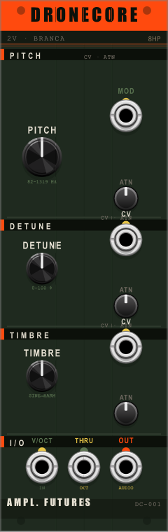
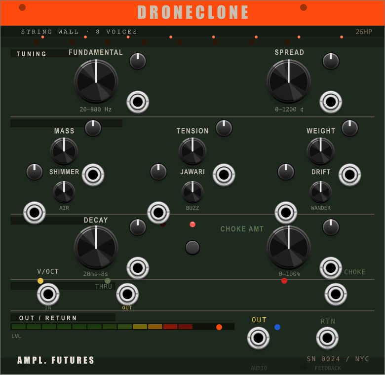
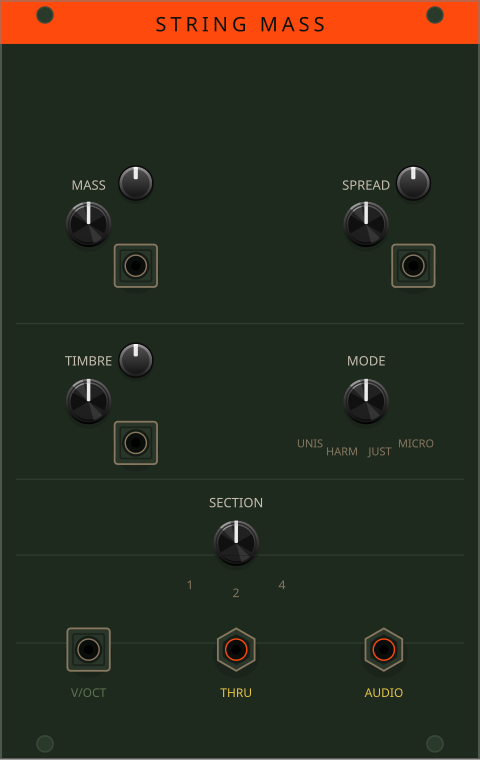
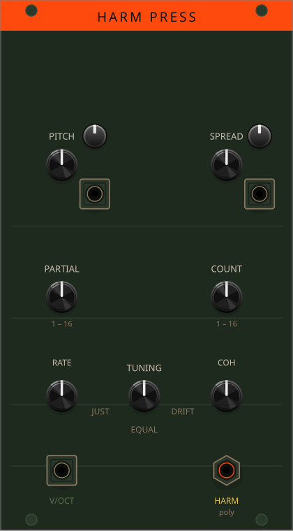
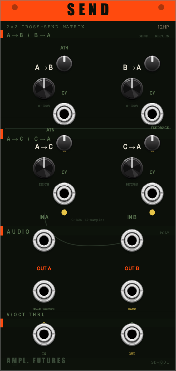
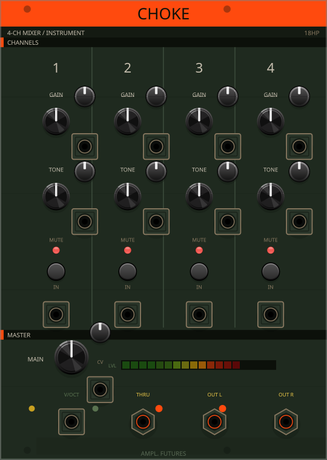
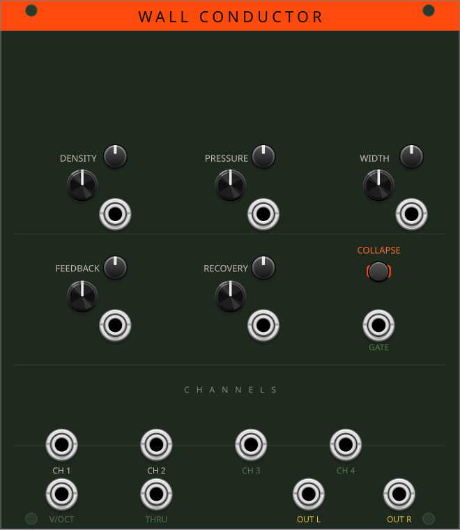
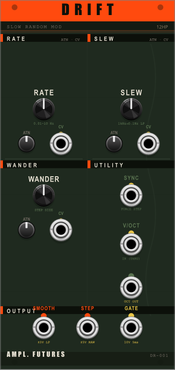
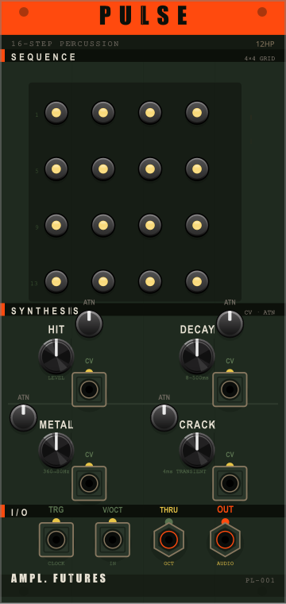
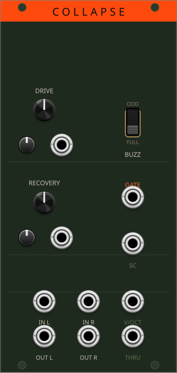
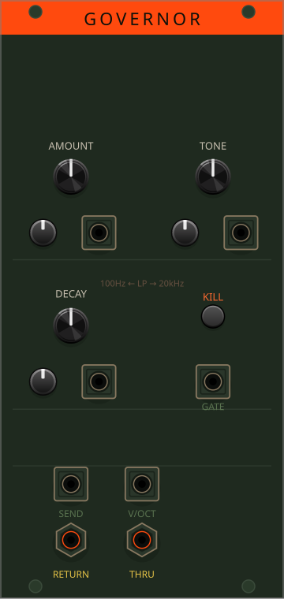
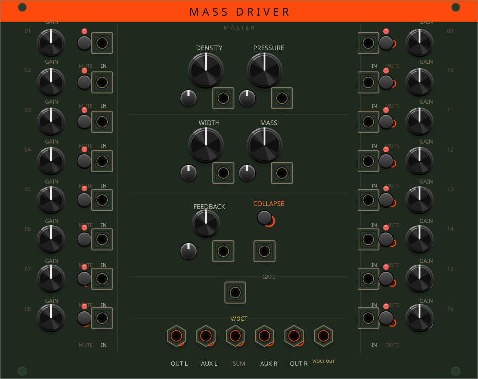
Amplified Futures is an open-source VCV Rack plugin built for performance with dense, unstable signal systems — sustained tones, feedback masses, slow collapse.
All modules are MIT licensed. Source on GitHub. Built with the VCV Rack SDK 2.6.6.
Search Amplified Futures in the VCV Rack Library browser once available, or install manually from the GitHub releases page.
Library submission is pending review.